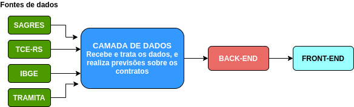
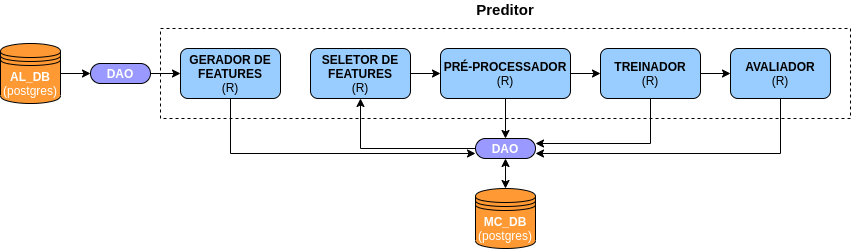
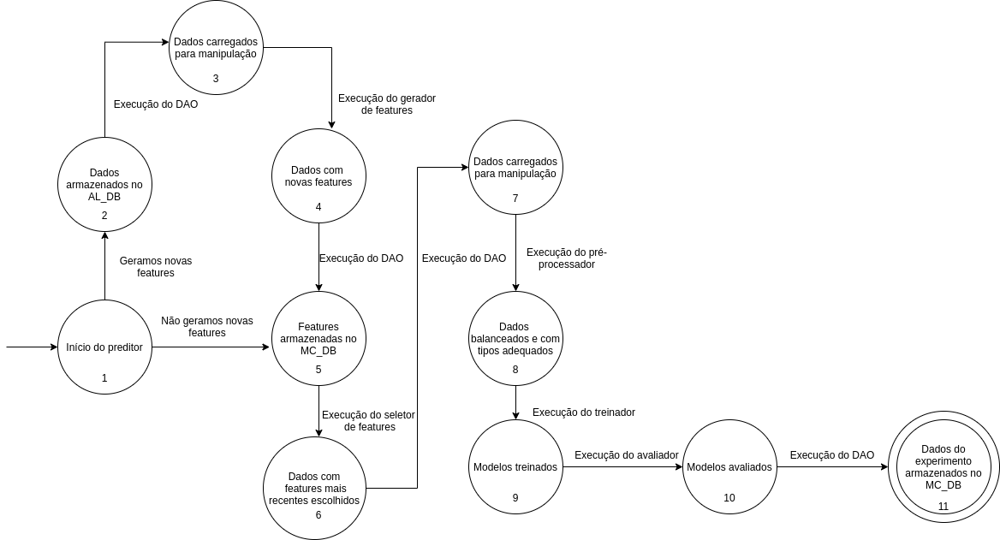

Mini-projeto 1
Autor
Este documento foi produzido por Beatriz Bezerra de Souza.
- Matrícula: 117110233
- Contato: beatriz.souza@ccc.ufcg.edu.br
- Projeto documentado: https://github.com/analytics-ufcg/monitor-cidadao-dados
Descrição Arquitetural – Serviço de predição de risco de contratos públicos
Este documento descreve parte da arquitetura do projeto Monitor Cidadão. Essa descrição foi baseada principalmente no modelo C4.
É importante destacar que não será descrita toda a arquitetura do Monitor Cidadão. O foco aqui é a descrição de um serviço específico de predição de risco de contratos públicos.
Descrição Geral sobre o Monitor Cidadão
O Monitor Cidadão é um projeto que tem como objetivo “possibilitar aos cidadãos o acompanhamento dos contratos realizados pelos municípios dos estados da Paraíba e do Rio Grande do Sul”. Mais detalhes sobre o projeto podem ser vistos neste link.
O Serviço de predição de risco de contratos públicos
Objetivo Geral
Implementar um serviço para receber dados e realizar predição de risco de contratos públicos para serem usados no Monitor Cidadão.
Objetivos Específicos
Queremos ter acesso a dados, provenientes de diferentes fontes, relacionados a contratos públicos. Além disso, queremos estimar o risco associado a contratos públicos. Para nós, o conceito de risco está associado a chance que um contrato possui de ser rescindido, paralisado, sustado ou impedido. E as características dos contratos são construídas a partir do comportamento passado e dados cadastrais das empresas responsáveis pelos contratos.
Contexto
O Monitor Cidadão é composto por três camadas: dados, back-end, e front-end, como apresentado no diagrama de contexto abaixo.
A camada de dados recebe dados de serviços externos, trata os dados recebidos, e realiza previsões sobre os riscos associados a contratos. Atualmente, os provedores de dados para o Monitor Cidadão são Sagres, TCE-RS, IBGE, e Tramita.
O back-end recebe os dados tratados e as previsões e os repassa para o front-end, que exibe as informações em um formato mais compreensível para os usuários.

Containers
O diagrama abaixo apresenta os containers do Monitor Cidadão. A camada de dados, que contém o serviço de predição que queremos descrever, é composta por cinco componentes: um fetcher, um transformador, um preditor, e dois bancos de dados.
O fetcher, o transformador, e o preditor são sistemas desenvolvidos em R. Os dois bancos de dados são relacionais, fazem uso do postgres. O fetcher é responsável por buscar os dados em suas fontes. O transformador utiliza o tradutor, um serviço interno responsável por traduzir os dados para um formato tabular, e em seguida realiza manipulações, como joins, nos dados. O preditor encapsula diversas funções para a realização das predições em torno dos contratos públicos.
Note que acessos aos bancos de dados são realizados por meio de objetos de acesso a dados (DAO).

Implantação
O diagrama abaixo mostra onde os containers do Monitor Cidadão estão implantados. As fontes de dados são serviços externos. O banco de dados SAGRES está implantado em uma máquina virtual chamada data-lake-mc. Os demais componentes estão implantados em outra máquina virtual chamada monitor-cidadão.

Componentes
O diagrama abaixo apresenta os componentes do preditor do Monitor Cidadão: um gerador de features, um seletor de features, um pré-processador, um treinador e um avaliador. Todos estes componentes são desenvolvidos em R.
O gerador de features recebe dados do AL_DB e cria novas features com base em manipulações dos dados existentes. O seletor de features seleciona as features mais recentemente adicionadas no banco de dados MC_DB. O pré-processador recebe as features selecionadas e realiza pré-processamento nos dados: divide os dados em treino e teste e realiza conversões de tipo. O treinador é responsável por treinar modelos do tipo regressão logística e floresta aleatória. O avaliador calcula métricas para os modelos treinados.
Note que as informações referentes à predição: conjunto de features utilizadas, modelos, métricas, são salvos no MC_DB. Acessos aos bancos de dados são realizados por meio de objetos de acesso a dados (DAO).

Código
Nesta etapa não faremos diagramas que apresentam detalhes da implementação. Faremos isso mais adiante.
Visão de Informação
O diagrama abaixo descreve a máquina de estados dos dados do preditor do Monitor Cidadão. Se formos gerar novas features, saímos do estado inicial (1) para o estado (2), onde os dados estão armazenados no AL_DB. Então executamos o DAO e vamos para o estado (3), onde os dados foram carregados para manipulação. Depois, executamos o gerador de features e vamos para o estado (4), onde temos os dados com as novas features. Executamos o DAO e vamos para o estado (5), onde as features foram armazenadas no MC_DB. Se não formos gerar novas features, saímos do estado inicial (1) para o estado (5), onde as features estão armazenadas no MC_DB.
Do estado (5), executamos o seletor de features e vamos para o estado (6), onde os dados com as features mais recentes foram escolhidos. Depois, executamos o DAO e vamos para o estado (7), onde os dados para manipulação foram carregados. Então executamos o pré-processador e vamos para o estado (8), onde temos os dados balanceados e com tipos adequados. Em seguida, executamos o treinador e vamos para o estado (9), onde temos os modelos treinados. Executamos o avaliador e vamos para o estado (10), onde temos os modelos avaliados. Por fim, executando o DAO, vamos para o estado (11), que é o estado de aceitação, onde os dados do experimento estão armazenados no MC_DB.

Contribuições Concretas
Ao produzir o conteúdo deste post, abri dois PRs para o repositório da camada de dados do Monitor Cidadão. O primeiro PR foi para atualizar o diagrama do fluxo de dados, que se encontra desatualizado no README do repositório. Em 12 de Outubro de 2020, o PR está aberto: https://github.com/analytics-ufcg/monitor-cidadao-dados/pull/73. O segundo PR foi para adicionar um documento de descrição da arquitetura do preditor do Monitor Cidadão de acordo com o modelo C4. Tal documento não existia no projeto. Em 12 de Outubro de 2020, o PR está aberto: https://github.com/analytics-ufcg/monitor-cidadao-dados/pull/74.